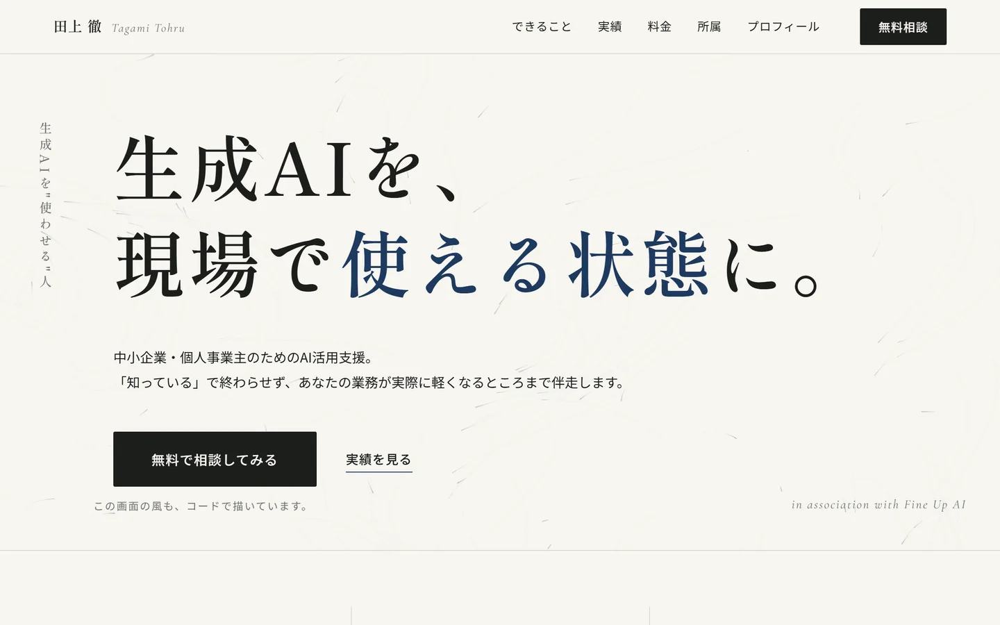

01 / Services
できること
4つの領域で、個人事業主・中小企業のみなさまをサポートします。
-
01
AI活用支援・コンサル
業務の棚卸しからツール選定・プロンプト設計まで。ChatGPT・Claude などの生成AIを、あなたの業務で実際に回る形に落とし込みます。
-
02
AIセミナー・研修
100名以上参加のセミナー登壇実績。未経験の方でも「明日から使える」状態を目指す、実演中心の研修を設計・実施します。
-
03
ライティング・note執筆
ウェブライター歴4年。SEO記事・note記事・導入事例の執筆など、読まれて成果につながる文章を書きます。
-
04
Web制作・ツール開発
ホームページ・LP制作から業務効率化ツールの開発まで。AIを活用した低コスト・短納期の制作が得意です。
02 / Reasons
選ばれる理由
「使える状態」までやり切る
5,000人在籍のAIスクールで800人以上の学習をサポート。ツールの紹介で終わらず、現場の業務で回るところまで伴走します。
教える × 書ける × 作れる
講師としての伝える力、ライター4年の言語化力、制作・開発のスキル。3つを掛け合わせて、課題に合った形で支援できます。
現場の実例にもとづく提案
接骨院・税理士・小売の現場など、実際の導入事例を多数公開中。机上の空論ではなく、再現性のあるやり方を提案します。
03 / Works
実績・事例
制作例と、導入事例・登壇レポート（note）を公開しています。
Case 01 / This Site

このポートフォリオサイト
成果設計（CTA導線・計測）× エディトリアルデザイン × ジェネラティブ演出。企画・デザイン・実装・SEO・計測まで一人で担当しています。
- HTML / CSS / JavaScript のみ・外部ライブラリ 0
- GA4 イベント計測・構造化データ・sitemap 実装済み
- ヒーローの風はコードによる自前描画（2D canvas）
接骨院の予約管理はAIエージェントで変わる。Claude Code導入実演で見えた可能性とは
独立した接骨院院長へのClaude Codeコンサルティング事例。AIエージェント導入の可能性を個人事業主・経営者向けに紹介。
【登壇事例】税理士向けにNotebookLMを実演｜税制改正大綱の読み解き・資料作成・横断比較まで
時間が足りない税理士業務を NotebookLM で効率化。セミナー登壇での実演内容をレポート。
【研修事例】"音声×AI"を現場で使える状態にする研修設計（Aqua Voice勉強会）
タイピングが苦手な層でも使える、音声入力×AI活用の研修設計と導入のポイント。
【生成AI導入事例】2時間のデータ入力が15分に。ChatGPTでコンビニ業界の現場を変えた実践
コンビニ店長の売上データ入力をChatGPT活用で87%削減。持ち帰り業務を解消した実例。
04 / Company
Fine Up AI
株式会社Fine Up AI のメンバーとして、企業の生成AI導入支援にも携わっています。
「生成AIを、現場で使われ続ける力に。」
企業規模での導入・全社研修のご相談は、法人窓口からどうぞ。
記事1本・セミナー1回など小さなご依頼は、このまま下の「ご依頼の流れ」へ。
05 / Pricing
料金の目安
表示は目安です。内容に応じてお見積もりします。まずは無料相談からどうぞ。
AI活用支援・研修
50,000円〜
- 業務ヒアリング・活用領域の整理
- 実演中心の研修（1回〜）
- 導入後のフォローアップ
おすすめ
LP制作
80,000円〜
- 構成・原稿（ライティング）込み
- スマホ対応・GA4計測設定込み
- 公開後の軽微修正 1回
ホームページ制作（〜5ページ）
150,000円〜
- サイト設計・原稿・デザイン込み
- SEO基本設定・お問い合わせフォーム
- 更新方法のレクチャー付き
記事1本・相談1回などの小さなご依頼も歓迎です。お問い合わせから気軽にご相談ください。
06 / Flow
ご依頼の流れ
初回相談は無料です。「何から手を付ければいいか分からない」段階で大丈夫です。
-
1
無料相談
note のDMからお気軽にどうぞ。「こんなこと頼めるかな？」の段階で構いません。
-
2
ヒアリング
オンラインで現状の業務とお困りごとを伺います。課題の整理だけでも価値が出るよう進めます。
-
3
ご提案・お見積もり
内容・期間・費用を明示してご提案します。納得いただいてから着手します。
-
4
実施・伴走
納品して終わりではなく、現場で実際に回る状態になるまで伴走します。
07 / Profile
プロフィール

田上 徹 / Tagami Tohru
AIコンサルタント・セミナー講師・ウェブライター
株式会社Fine Up AI 所属
ウェブライターとして4年間、読まれる文章と向き合ったのち、生成AIの可能性に出会いAIコンサルタント・セミナー講師として活動。 5,000人在籍のAIスクールで800人以上の学習をサポートし、100名以上が参加するセミナーで講師を務める。 接骨院・税理士・小売など、現場への導入支援の実例は実績セクションで公開中。 現在は株式会社Fine Up AI に所属し、企業の生成AI導入支援にも携わる。 モットーは「生成AIを知って終わりにせず、現場で使える状態にすること」。
- 全国オンライン対応
- 秘密保持に配慮（NDA締結のご相談可）
- 記事1本・セミナー1回など小さなご依頼から対応
08 / FAQ
よくあるご質問
相談だけでも大丈夫ですか？
大歓迎です。初回相談は無料で、「何から手を付ければいいか分からない」という段階からで構いません。
対応エリアはどこまでですか？
全国オンライン対応です。ヒアリングから納品・伴走までオンラインで完結できます。
業務情報の秘密保持は守られますか？
お預かりした業務情報の取り扱いには細心の注意を払います。必要に応じてNDA（秘密保持契約）締結のご相談も可能です。
小さな依頼でもお願いできますか？
はい。記事1本の執筆、セミナー1回の登壇、1テーマだけのAI相談など、小さな単位からお受けしています。
会社としての依頼も可能ですか？
可能です。企業規模での生成AI導入支援・全社研修は、所属する株式会社Fine Up AI の法人窓口からご相談ください。個人宛の小さなご依頼はこのサイトからどうぞ。
09 / Contact
まず、話してみませんか。
AI活用支援・セミナー登壇・執筆・制作のご依頼やご相談は、
下のフォームからお気軽にどうぞ。初回相談は無料です。